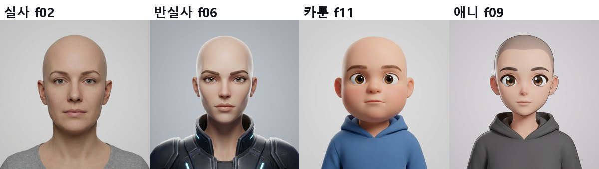
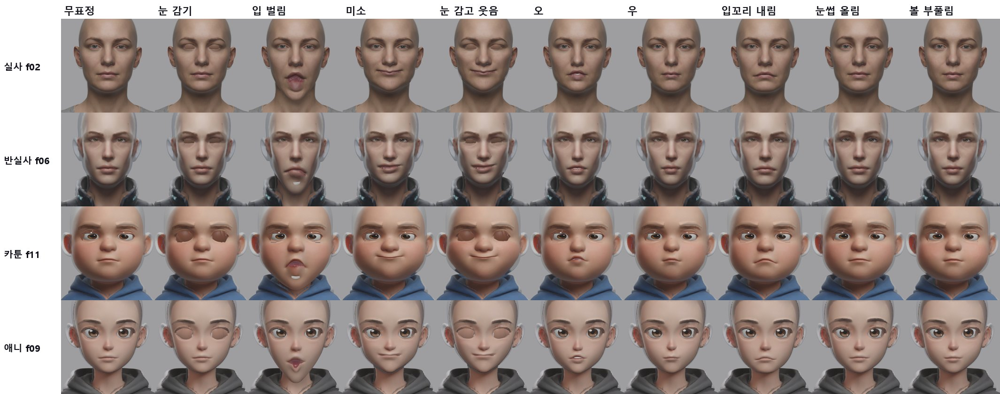
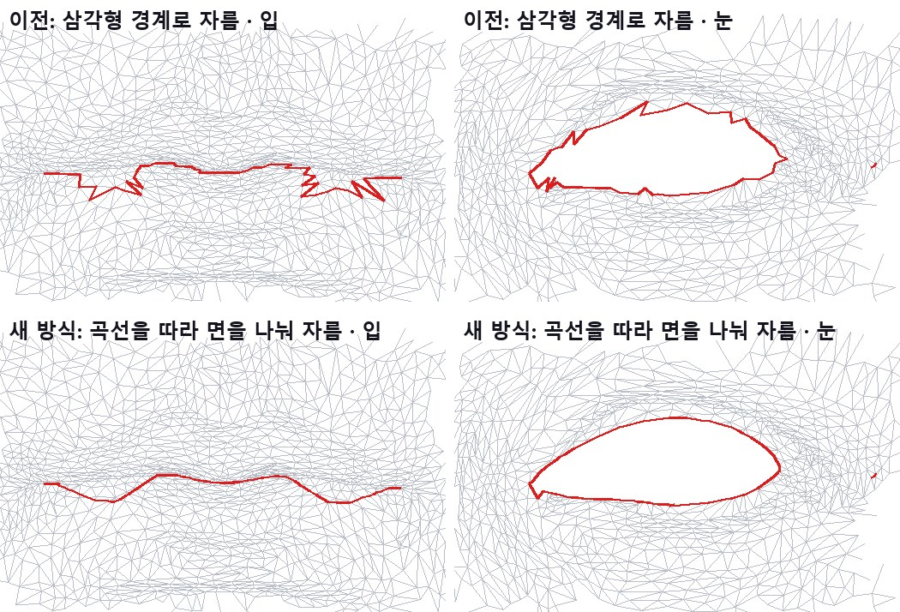
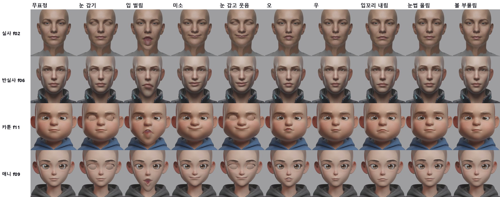
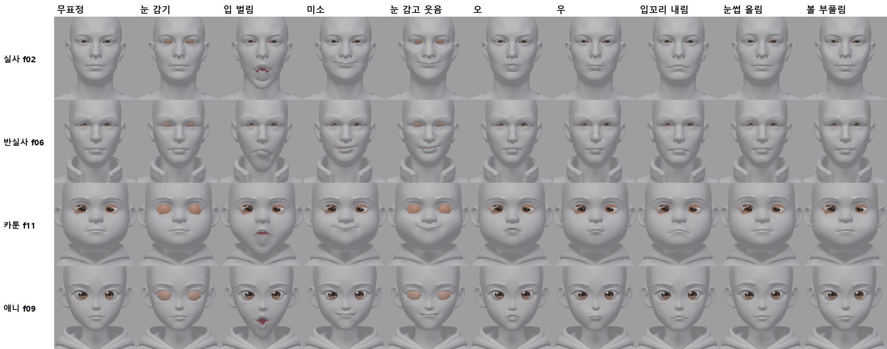
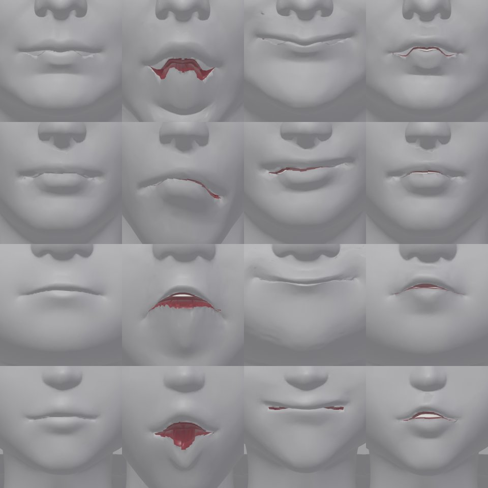

<title>4가지 스타일 전체 흐름</title>
<link rel="preconnect" href="https://fonts.googleapis.com">
<link rel="preconnect" href="https://fonts.gstatic.com" crossorigin>
<link rel="stylesheet" href="https://fonts.googleapis.com/css2?family=IBM+Plex+Mono:wght@400;500&family=IBM+Plex+Sans+KR:wght@400;500;600;700&display=swap">
<style>
/* Layout: one reading column; figures full width of the column */
:root{--bg:#F5F6F8;--paper:#fff;--ink:#1B1F27;--muted:#5B6473;--line:#DDE1E8;--soft:#EEF1F6;--accent:#2F5BD3;--good:#1E8A52;--bad:#C83A32;--warn:#B26A00;
--f-body:"IBM Plex Sans KR","Malgun Gothic",system-ui,sans-serif;--f-mono:"IBM Plex Mono",ui-monospace,Consolas,monospace}
@media (prefers-color-scheme: dark){:root:not([data-theme="light"]){--bg:#12151B;--paper:#191D25;--ink:#E5E8EE;--muted:#9BA4B3;--line:#2B313C;--soft:#20252F;--accent:#7FA2FF;--good:#5ACB8C;--bad:#FF6F66;--warn:#F0AE48;color-scheme:dark}}
:root[data-theme="dark"]{--bg:#12151B;--paper:#191D25;--ink:#E5E8EE;--muted:#9BA4B3;--line:#2B313C;--soft:#20252F;--accent:#7FA2FF;--good:#5ACB8C;--bad:#FF6F66;--warn:#F0AE48;color-scheme:dark}
*{box-sizing:border-box}
body{background:var(--bg);color:var(--ink);font-family:var(--f-body);font-size:16px;line-height:1.7}
main{max-width:920px;margin:0 auto;padding-inline:16px;padding-block:26px 60px}
h1{font-size:clamp(25px,4vw,33px);margin:0;line-height:1.25;text-wrap:balance}
.sub{color:var(--muted);margin:6px 0 0}
h2{font-size:21px;margin:38px 0 6px;text-wrap:balance}
h3{font-size:17px;margin:20px 0 4px}
p,ul,ol{max-width:72ch} li{margin:3px 0}
figure{margin:16px 0;background:var(--paper);border:1px solid var(--line);border-radius:12px;padding:12px}
figure img{display:block;width:100%;height:auto;border-radius:6px;background:#2a2a2e}
figure img.narrow{max-width:560px;margin:0 auto}
figure svg{display:block;width:100%;height:auto}
figcaption{font-size:14px;color:var(--muted);margin-top:8px}
figcaption b{color:var(--ink)}
.tbl{overflow-x:auto;margin:12px 0}
table{border-collapse:collapse;font-size:14.5px;min-width:540px;width:100%;background:var(--paper)}
th,td{border:1px solid var(--line);padding:6px 10px;text-align:left;vertical-align:top}
th{background:var(--soft)}
td.num{font-family:var(--f-mono);font-variant-numeric:tabular-nums;white-space:nowrap}
.good{color:var(--good);font-weight:600}.bad{color:var(--bad);font-weight:600}.warn{color:var(--warn);font-weight:600}
.box{background:var(--paper);border:1px solid var(--line);border-left:4px solid var(--accent);border-radius:0 10px 10px 0;padding:12px 16px;margin:14px 0}
code{font-family:var(--f-mono);font-size:13.5px;background:var(--soft);padding:1px 5px;border-radius:4px;overflow-wrap:anywhere}
svg text{font-family:var(--f-body)}
.s-ink{fill:var(--ink)}.s-muted{fill:var(--muted)}.s-paper{fill:var(--paper)}.s-soft{fill:var(--soft)}.s-acc{fill:var(--accent)}.s-good{fill:var(--good)}.s-bad{fill:var(--bad)}
.st-acc{stroke:var(--accent)}.st-good{stroke:var(--good)}.st-ink{stroke:var(--ink)}.st-muted{stroke:var(--muted)}.st-bad{stroke:var(--bad)}
</style>
<main>
<h1>T14b · 4가지 스타일로 끝까지 (실사 · 반실사 · 카툰 · 애니)</h1>
<p class="sub">2026-10-12 · T14 시험 얼굴 중 스타일별 1개씩 · 자르기 → 눈꺼풀·입 부품 → Rigify(T14 관절) → ARKit 42개(1.0배) → 원본 색 · 크레딧 사용 없음</p>
<div class="box"><b>결론</b>
<ul>
<li><b>4가지 스타일 모두 사람 손 없이 끝까지 돕니다.</b> 한 머리에 약 7분입니다. 원본과의 차이는 0.0004mm 이하이고, 원래 꼭짓점은 하나도 빠지거나 움직이지 않습니다.</li>
<li><b>4개 모두 잘 보이는 것</b>: 눈 깜빡임, 미소, 눈 감고 웃음, 입꼬리 내림. 오·우·볼 부풀림·눈썹 올림도 움직이지만 작게 보입니다.</li>
<li><b>이번 회차에 고친 것 4가지</b>
  <ol>
  <li>눈 자르기에 T14 눈 윤곽을 연결했습니다(사람 눈은 MediaPipe). f06에서 실패하던 것과 f02의 짝짝이 눈이 해결됐습니다.</li>
  <li>눈과 입을 지그재그가 아닌 매끈한 곡선으로 자릅니다. 원본 표면 위에 새 꼭짓점을 넣는 방식입니다.</li>
  <li>턱 회전축을 얼굴 점에서 구합니다. 아랫니가 턱 밖으로 나오던 문제가 해결됐습니다.</li>
  <li>정면 그림 한 장으로 색을 입혀도 헬멧 같은 회색 테두리, 옷 색 번짐, 갈색 눈꺼풀이 생기지 않습니다.</li>
  </ol></li>
<li><b>남은 큰 문제는 입 안입니다.</b> 입을 크게 벌리면 입 안 벽(T2 부품)이 구겨져 보이고 입술 안쪽이 너덜거립니다. 특히 실사 f02와 카툰 f11에서 심합니다. 반실사 f06은 입이 작게 벌어집니다.</li>
</ul></div>

<h2>1. 고른 4개와 순서</h2>
<figure><figcaption><b>그림 1.</b> 스타일별 1개씩입니다. 실사는 사람 눈, 반실사는 우리 게임에 가까운 스타일, 카툰과 애니는 큰 눈(눈꺼풀을 깊이 테두리로 찾는 쪽)입니다. 이 4개가 되면 나머지도 될 것으로 봅니다.</figcaption></figure>
<figure>
<svg viewBox="0 0 860 200" role="img" aria-label="전체 흐름">
  <g font-size="12.5">
    <rect x="6" y="14" width="160" height="70" rx="8" class="s-paper st-acc" stroke-width="1.5"/><text x="86" y="38" text-anchor="middle" class="s-ink" font-weight="600">① 템플릿 맞춤</text><text x="86" y="58" text-anchor="middle" class="s-muted">face_fit (표정 크기용)</text>
    <rect x="178" y="14" width="160" height="70" rx="8" class="s-paper st-acc" stroke-width="1.5"/><text x="258" y="38" text-anchor="middle" class="s-ink" font-weight="600">② 눈·입 자르기</text><text x="258" y="58" text-anchor="middle" class="s-muted">T14 눈 윤곽, 곡선 자르기</text>
    <rect x="350" y="14" width="160" height="70" rx="8" class="s-paper st-acc" stroke-width="1.5"/><text x="430" y="38" text-anchor="middle" class="s-ink" font-weight="600">③ 눈꺼풀 부품 (T1)</text><text x="430" y="58" text-anchor="middle" class="s-muted">깜빡임 뼈</text>
    <rect x="522" y="14" width="160" height="70" rx="8" class="s-paper st-acc" stroke-width="1.5"/><text x="602" y="38" text-anchor="middle" class="s-ink" font-weight="600">④ 입 안 부품 (T2)</text><text x="602" y="58" text-anchor="middle" class="s-muted">입 안 벽, 이, 혀</text>
    <rect x="694" y="14" width="160" height="70" rx="8" class="s-paper st-acc" stroke-width="1.5"/><text x="774" y="38" text-anchor="middle" class="s-ink" font-weight="600">⑤ Rigify (T13+T14)</text><text x="774" y="58" text-anchor="middle" class="s-muted">관절 92 + 얼굴 기준 턱 축</text>
    <rect x="178" y="112" width="250" height="62" rx="8" class="s-paper st-acc" stroke-width="1.5"/><text x="303" y="136" text-anchor="middle" class="s-ink" font-weight="600">⑥ ARKit 42개 굽기 (1.0배)</text><text x="303" y="156" text-anchor="middle" class="s-muted">+ 깜빡임 뼈 2개</text>
    <rect x="448" y="112" width="250" height="62" rx="8" class="s-paper st-good" stroke-width="2"/><text x="573" y="136" text-anchor="middle" class="s-ink" font-weight="600">⑦ 원본 색 + 렌더</text><text x="573" y="156" text-anchor="middle" class="s-muted">정면 그림 1장, 텍스처·회색</text>
    <path d="M166 49 H174 M338 49 H346 M510 49 H518 M682 49 H690 M774 84 V98 H303 V108 M428 143 H444" fill="none" class="st-muted" stroke-width="2"/>
  </g>
</svg>
<figcaption><b>그림 2.</b> 한 머리의 전체 흐름(약 7분, 가중치 계산이 5분). 시작은 T14에서 똑바로 세운 머리와 그 관절 배치입니다.</figcaption></figure>

<h2>2. 1차 결과와 찾은 문제</h2>
<figure><figcaption><b>그림 3.</b> 1차 결과(고치기 전). 흐름은 끝까지 돌았지만 아래 문제가 보였습니다.</figcaption></figure>
<div class="tbl"><table>
<tr><th>문제</th><th>원인</th><th>해결</th></tr>
<tr><td>f06 눈 자르기 실패, f02 좌우 눈 구멍 크기 다름 (9mm 대 14mm)</td><td>눈 자르기는 깊이 테두리만 써서, 사람 눈에서는 눈 밑 주름으로 새어 나감 (T14에서 본 문제)</td><td class="good">T14가 MediaPipe를 고른 머리는 그 16점 윤곽(대칭, 표면 위)으로 자름 → f02 10.6 대 10.9mm</td></tr>
<tr><td>입술선이 다물어도 찢긴 것처럼 보이고, 눈 구멍 가장자리가 들쭉날쭉함</td><td>곡선 근처 삼각형들의 경계를 따라 열어서 지그재그가 됨</td><td class="good">곡선이 지나는 면을 먼저 곡선을 따라 나눔(새 꼭짓점은 원래 모서리 위) → 매끈한 선 (그림 4)</td></tr>
<tr><td>입을 벌리면 아랫니가 턱 밖으로 나옴 (f06, f11)</td><td>턱 축이 턱 끝과 같은 높이에 있어서, 축보다 위에 있는 이가 앞으로 돌아 나옴. 축은 템플릿을 머리 전체에 맞춘 값인데, 상반신 모델에서는 맞춤이 틀어짐(오차 95% 30mm)</td><td class="good">얼굴 점으로 맞춘 템플릿 축 사용 (턱 끝보다 약 10cm 위, 7cm 뒤). character1 기존 축과 1.3cm 이내</td></tr>
<tr><td>머리 옆이 투명한 헬멧처럼 보임, 관자놀이에 옷 색 번짐</td><td>그림 배경·림 조명이 묻음. 얼굴에서 먼 곳은 그림 휨이 옷 쪽을 가리킴. 안 보이는 곳 채우기 기준색이 옷 색</td><td class="good">배경은 테두리부터 채워 찾고 가장자리 띠도 뺌. 얼굴에서 멀수록 휨을 줄임. 기준색은 볼 피부. 두피는 목·옷이 아닌 위쪽에서만 채움</td></tr>
<tr><td>감은 눈꺼풀이 갈색·흰색 반점</td><td>눈 위 피부를 샘플했는데 큰 눈에서는 속눈썹·눈썹이 섞임</td><td class="good">볼 피부색보다 조금 어둡게</td></tr>
</table></div>
<figure><figcaption><b>그림 4.</b> f02 입술·왼쪽 눈의 자른 선(빨강). 위: 이전, 삼각형 경계로 자름. 아래: 새 방식, 곡선을 따라 면을 먼저 나눈 뒤 자름. 새 꼭짓점은 원래 모서리 위에 있어서 표면 모양은 그대로입니다(원본 표면과의 거리 0.00003mm 이하, 원래 꼭짓점 이동 0).</figcaption></figure>

<h2>3. 최종 결과</h2>
<figure><figcaption><b>그림 5.</b> 최종 결과, 원본 색. 깜빡임·미소·눈 감고 웃음·입꼬리 내림은 4개 모두 자연스럽습니다. 오·우·볼 부풀림·눈썹 올림은 원래 작은 표정이라 차이가 작게 보입니다.</figcaption></figure>
<figure><figcaption><b>그림 6.</b> 같은 표정, 회색(모양만). 감은 눈꺼풀(주황)은 부품의 바탕색입니다.</figcaption></figure>
<figure><figcaption><b>그림 7.</b> 입 확대, 회색. 위에서부터 f02, f06, f11, f09이고, 왼쪽부터 무표정 · 입 벌림 · 미소 · 오입니다. 다문 입술선은 매끈해졌습니다(f11, f09). 입 벌림에서는 입 안 벽(빨강)이 구겨져 보이고, f02 윗입술이 W자로 처집니다. f06은 입이 작게 벌어집니다. 실사 f02와 반실사 f06은 다문 상태에서도 입꼬리 끝에 작은 조각이 보입니다.</figcaption></figure>

<h2>4. 검사</h2>
<div class="tbl"><table>
<tr><th>항목</th><th>실사 f02</th><th>반실사 f06</th><th>카툰 f11</th><th>애니 f09</th></tr>
<tr><td>눈 자르기 기준</td><td>MediaPipe 윤곽</td><td>MediaPipe 윤곽</td><td>깊이 테두리</td><td>깊이 테두리</td></tr>
<tr><td>곡선으로 나눈 면 (오른눈/왼눈/입)</td><td class="num">105 / 90 / 86</td><td class="num">39 / 39 / 37</td><td class="num">164 / 158 / 80</td><td class="num">117 / 115 / 40</td></tr>
<tr><td>원본 표면과의 거리 / 원래 꼭짓점 이동</td><td class="num good">0.00001 / 0mm</td><td class="num good">0.00003 / 0mm</td><td class="num good">0.00002 / 0mm</td><td class="num good">0.00002 / 0mm</td></tr>
<tr><td>뜬 눈 틈 왼/오른</td><td class="num">10.6 / 10.9mm</td><td class="num">11.5 / 10.3mm</td><td class="num">30.3 / 30.7mm</td><td class="num">27.3 / 27.9mm</td></tr>
<tr><td>눈 감기: 눈 덮임 / 눈알 뚫음</td><td class="num good">100% / 0</td><td class="num good">100% / 0</td><td class="num good">100% / 0</td><td class="num good">100% / 0</td></tr>
<tr><td>쉬는 상태 눈꺼풀 부품 노출 (왼/오른)</td><td class="num warn">14 / 18%</td><td class="num">2 / 2%</td><td class="num warn">0 / 15%</td><td class="num">0 / 0%</td></tr>
<tr><td>리그 쉬는 자세 차이</td><td class="num good">0.0003mm</td><td class="num good">0.0004mm</td><td class="num good">0.0002mm</td><td class="num good">0.0002mm</td></tr>
<tr><td>표정 42개 뒤집힌 면 합계 (가장 큰 것)</td><td class="num">525 (mouthClose 248)</td><td class="num good">190 (mouthClose 25)</td><td class="num warn">785 (mouthClose 263, jawOpen 111)</td><td class="num">466 (mouthClose 103)</td></tr>
</table></div>

<h2>5. 남은 문제와 다음 단계</h2>
<ol>
<li><b>입 안 (가장 큼)</b>: T2 입 안 벽이 입술 가장자리에서 3mm 뒤로 곧게 들어간 뒤 주머니로 이어집니다. 크게 벌리면 그 벽이 구겨져 보입니다. 벽을 입술 안쪽 곡면으로 다시 만들고, 턱을 따라가는 비율을 위·아래로 나누는 것이 다음 할 일입니다. 실사 f02의 W자 윗입술과 mouthClose의 뒤집힌 면도 같은 곳입니다.</li>
<li><b>f06 입이 작게 벌어짐</b>: 아랫입술의 턱 영향이 약합니다. 가중치를 확인합니다.</li>
<li><b>쉬는 상태 눈꺼풀 부품 노출</b> (f02, f11 한쪽): 부품이 윗눈꺼풀 밑으로 덜 들어갑니다. T1 부품 위치를 눈마다 조정합니다.</li>
<li><b>입꼬리 끝 작은 조각</b> (f02, f06): 자른 선 끝부분 처리입니다.</li>
</ol>

<h2>6. 파일</h2>
<ul>
<li><code>tools/face_auto/rig_original.py</code>: 곡선 자르기(면을 먼저 나눈 뒤 열기), <code>EYE_RIMS</code>로 T14 눈 윤곽 사용, 원본 표면 검사</li>
<li><code>tools/face_auto/rig_points.py</code>: 사람 눈일 때 눈 윤곽 전체(64점)를 함께 저장, 턱 축은 닮음 변환으로</li>
<li><code>tools/face_auto/rigify_fit.py</code>: <code>RIG_POINTS</code>를 쓸 때 턱 축도 그 파일에서</li>
<li><code>tools/face_auto/project_texture.py</code>: 옆·뒤 그림 없어도 동작, 배경·가장자리 빼기, 얼굴에서 먼 곳은 휨 줄이기, 두피 채우기, 눈꺼풀 색</li>
<li>결과(임시 폴더 <code>s4/</code>): 머리마다 <code>fit, rig, t1, t2, rfit, bake, tex.blend</code>, 실행 스크립트 <code>chain.sh</code></li>
</ul>
</main>
